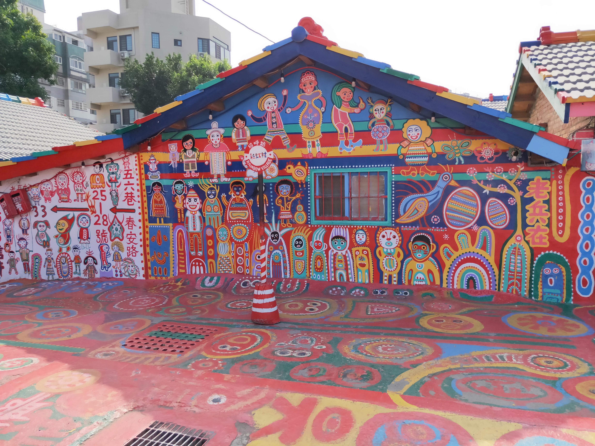
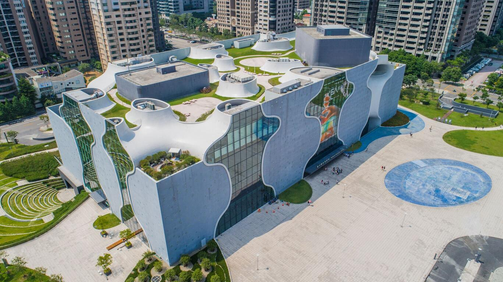
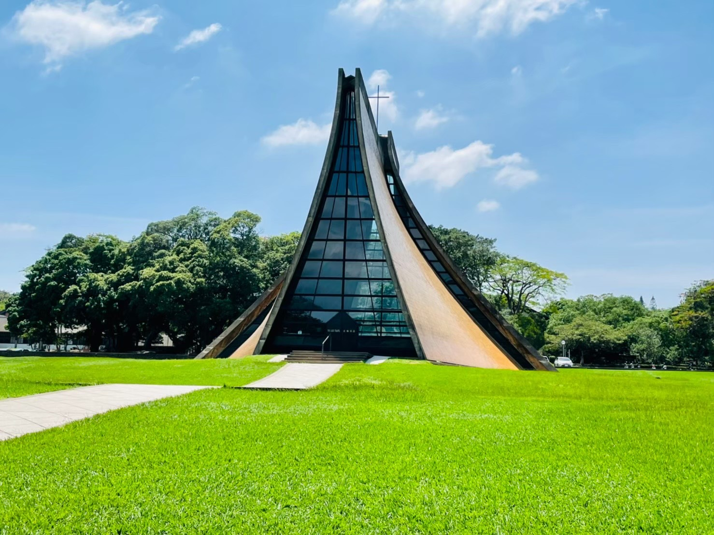

探索台中
台中是台灣中部的重要城市，被譽為「台灣的心臟」，擁有獨特的文化和風景。以下是台中著名的景點:

逢甲夜市
逢甲夜市是台中最熱鬧的夜市之一，這裡有各種美食、服飾和娛樂設施，吸引了許多遊客和年輕人。在逢甲夜市，你可以品嚐到各種地道的台灣小吃，如珍珠奶茶、大腸包小腸等。近年來，市政府重新規劃商圈風貌，整修路面，街道造景，並規劃停車空間，努力解決停車的問題。現今逢甲文華夜市嶄新面貌更吸引了不少消費族群，商圈更有逐漸擴大的現象，並成為民眾心目中票選「臺中市十大觀光景點」之一。

彩虹眷村
彩虹村位於臺中市南屯區春安路56巷內，園區內所有的彩繪作品皆來自彩虹爺爺-黃永阜先生，他融入在地感動的元素，發揮巧思，在老屋上彩繪五顏六色，充滿童趣的圖畫。 走入繽紛夢幻的圖塊巷弄間，彷彿進入童話世界，吸引國內外遊客前往觀賞拍照朝聖，成為臺中人氣景點之一。

台中國家歌劇院
台中國家歌劇院是台灣重要的表演藝術中心，擁有現代化的設施和豐富的演出節目。這座建築設計獨特，外觀猶如一朵盛開的白色海芋花，是台中的地標之一。臺中國家歌劇院造型前衛，以「美聲涵洞」概念，採用曲牆、孔洞與管狀等別具一格的設計，整棟建築完全沒有樑柱支撐，也無一處為90度牆面，顛覆了一般建築物的概念。

東海大學
東海大學創立於西元1955年，至今創校超過一甲子，為台灣的第一所私立大學，也是全國首創且唯一一所從幼稚園、小學、中學、大學到研究所博士班兼備的完整教育學苑，亦最早創辦「通識教育」、「勞作教育」制度，目前已成為各大學觀摩學習的對象。